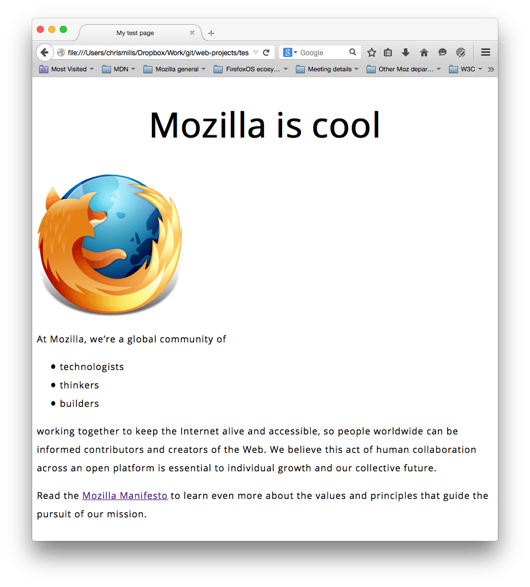

CSS (Cascading Style Sheets) is the code you use to style your webpage. CSS Basics takes you through what you need to get started. We'll answer questions like: How do I make my text black or red? How do I make my content show up in such-and-such a place on the screen? How do I decorate my webpage with background images and colors?
So what is CSS, really?
Like HTML, CSS is not really a programming language. It is not a markup language either — it is a style sheet language. This means that it lets you apply styles selectively to elements in HTML documents. For example, to select all the paragraph elements on an HTML page and turn the text within them red, you'd write this CSS:
p {
color: red;
}
Let's try it out: paste those three lines of CSS into a new file in your text editor, and then save the file as style.css in your styles directory.
But we still need to apply the CSS to your HTML document. Otherwise, the CSS styling won't affect how your browser displays the HTML document. (If you haven't been following on with our project, read Dealing with files and HTML basics to find out what you need to do first.)
- Open your
index.htmlfile and paste the following line somewhere in the head (that is, between the<head>and</head>tags):<link href="styles/style.css" rel="stylesheet" type="text/css">
- Save
index.htmland load it in your browser. You should see something like this:
 If your paragraph text is now red, congratulations! You've just written your first successful CSS.
If your paragraph text is now red, congratulations! You've just written your first successful CSS.
Anatomy of a CSS ruleset
Let's look at the above CSS in a bit more detail:

The whole structure is called a rule set (but often "rule" for short). Note also the names of the individual parts:
- Selector
- The HTML element name at the start of the rule set. It selects the element(s) to be styled (in this case,
pelements). To style a different element, just change the selector. - Declaration
- A single rule like
color: red;specifying which of the element's properties you want to style. - Properties
- Ways in which you can style a given HTML element. (In this case,
coloris a property of the<p>elements.) In CSS, you choose which properties you want to affect in your rule. - Property value
- To the right of the property after the colon, we have the property value, which chooses one out of many possible appearances for a given property (there are many
colorvalues besidesred).
Note the other important parts of the syntax:
- Each rule set (apart from the selector) must be wrapped in curly braces (
{}). - Within each declaration, you must use a colon (
:) to separate the property from its values. - Within each rule set, you must use a semicolon (
;) to separate each declaration from the next one.
So to modify multiple property values at once, you just need to write them separated by semicolons, like this:
p {
color: red;
width: 500px;
border: 1px solid black;
}
Selecting multiple elements
You can also select multiple types of elements and apply a single rule set to all of them. Include multiple selectors separated by commas. For example:
p, li, h1 {
color: red;
}
Different types of selectors
There are many different types of selectors. Above, we only looked at element selectors, which select all elements of a given type in the given HTML documents. But we can make more specific selections than that. Here are some of the more common types of selector:
| Selector name | What does it select | Example |
|---|---|---|
| Element selector (sometimes called a tag or type selector) | All HTML element(s) of the specified type. | pSelects <p> |
| ID selector | The element on the page with the specified ID (on a given HTML page, you're only allowed one element per ID). | #my-idSelects <p id="my-id"> or <a id="my-id"> |
| Class selector | The element(s) on the page with the specified class (multiple class instances can appear on a page). | .my-classSelects <p class="my-class"> and <a class="my-class"> |
| Attribute selector | The element(s) on the page with the specified attribute. | img[src]Selects <img src="myimage.png"> but not <img> |
| Pseudo-class selector | The specified element(s), but only when in the specified state, e.g. being hovered over. | a:hoverSelects <a>, but only when the mouse pointer is hovering over the link. |
There are many more selectors to explore, and you can find a more detailed list in our Selectors guide.
Fonts and text
Now that we've explored some CSS basics, let's start adding some more rules and information to our style.css file to make our example look nice. Let's start by getting our fonts and text to look a little better.
- First of all, go back and find the output from Google Fonts that you stored somewhere safe. Add the
<link>element somewhere inside yourindex.html's head (again, anywhere between the<head>and</head>tags). It'll look something like this:<link href='https://fonts.googleapis.com/css?family=Open+Sans' rel='stylesheet' type='text/css'>
- Next, delete the existing rule you have in your
style.cssfile. It was a good test, but red text doesn't actually look very good. - Add the following lines in its place, replacing the placeholder line with the actual
font-familyline you got from Google Fonts. (font-familyjust means the font(s) you want to use for your text.) This rule first sets a global base font and font size for the whole page (since<html>is the parent element of the whole page, and all elements inside it inherit the samefont-sizeandfont-family):html { font-size: 10px; /* px means 'pixels': the base font size is now 10 pixels high */ font-family: 'Open Sans', sans-serif; /* this should be the rest of the output you got from Google fonts */ }Note: Anything in a CSS document between
/*and*/is a CSS comment, which the browser ignores when it renders the code. This is a place for you to write helpful notes on what you are doing. - Now we'll set font sizes for text-containing elements inside the HTML body (
<h1>,<li>, and<p>). We'll also center the text of our heading and set some line height and letter spacing on the body content to make it a bit more readable:h1 { font-size: 60px; text-align: center; } p, li { font-size: 16px; line-height: 2; letter-spacing: 1px; }
You can adjust these px values to whatever you like to get your design looking how you want, but in general your design should look like this:

Boxes, boxes, it's all about boxes
One thing you'll notice about writing CSS is that a lot of it is about boxes — setting their size, color, position, etc. Most of the HTML elements on your page can be thought of as boxes sitting on top of each other.

Not surprisingly, CSS layout is based principally on the box model. Each of the blocks taking up space on your page has properties like this:
padding, the space just around the content (e.g., around paragraph text)border, the solid line that sits just outside the paddingmargin, the space around the outside of the element

In this section we also use:
width(of an element)background-color, the color behind an element's content and paddingcolor, the color of an element's content (usually text)text-shadow: sets a drop shadow on the text inside an elementdisplay: sets the display mode of an element (don't worry about this yet)
So, let's get started and add some more CSS to our page! Keep adding these new rules to the bottom of the page, and don't be afraid to experiment with changing values to see how it turns out.
Changing the page color
html {
background-color: #00539F;
}
This rule sets a background color for the whole page. Change the color code above to whatever color you chose when planning your site.
Sorting the body out
body {
width: 600px;
margin: 0 auto;
background-color: #FF9500;
padding: 0 20px 20px 20px;
border: 5px solid black;
}
Now for the <body> element. There are quite a few declarations here, so let's go through them all one by one:
width: 600px;— this forces the body to always be 600 pixels wide.margin: 0 auto;— When you set two values on a property likemarginorpadding, the first value affects the element's top and bottom side (make it0in this case), and the second value the left and right side (here,autois a special value that divides the available horizontal space evenly between left and right). You can also use one, three, or four values, as documented here.background-color: #FF9500;— as before, this sets the element's background color. We've used a sort of reddish orange for the body as opposed to dark blue for the<html>element, but feel free to go ahead and experiment.padding: 0 20px 20px 20px;— we have four values set on the padding, to make a bit of space around our content. This time we are setting no padding on the top of the body, and 20 pixels on the left, bottom and right. The values set top, right, bottom, left, in that order.border: 5px solid black;— this simply sets a 5-pixel–wide, solid black border on all sides of the body.
Positioning and styling our main page title
h1 {
margin: 0;
padding: 20px 0;
color: #00539F;
text-shadow: 3px 3px 1px black;
}
You may have noticed there's a horrible gap at the top of the body. That happens because browsers apply some default styling to the <h1> element (among others), even when you haven't applied any CSS at all! That might sound like a bad idea, but we want even an unstyled webpage to have basic readability. To get rid of the gap we overrode the default styling by setting margin: 0;.
Next up, we've set the heading's top and bottom padding to 20 pixels, and made the heading text the same color as the html background color.
One rather interesting property we've used here is text-shadow, which applies a text shadow to the text content of the element. Its four values are as follows:
- The first pixel value sets the horizontal offset of the shadow from the text — how far it moves across: a negative value should move it to the left.
- The second pixel value sets the vertical offset of the shadow from the text — how far it moves down, in this example; a negative value should move it up.
- The third pixel value sets the blur radius of the shadow — a bigger value will mean a more blurry shadow.
- The fourth value sets the base color of the shadow.
Again, try experimenting with different values to see what you can come up with!
Centering the image
img {
display: block;
margin: 0 auto;
}
Finally, we'll center the image to make it look better. We could use the margin: 0 auto trick again as we did earlier for the body, but we also need to do something else. The <body> element is block level, meaning it takes up space on the page and can have margin and other spacing values applied to it. Images, on the other hand, are inline elements, meaning they can't. So to apply margins to the image, we have to give the image block-level behavior using display: block;.
Note: Don't worry if you don't yet understand display: block; and the block-level/inline distinction. You will as you study CSS in more depth. You can find out more about the different available display values at our display reference page.
Conclusion
If you have followed all the instructions in this article, you should end up with a page that looks something like this (you can also view our version here):

If you get stuck, you can always compare your work with our finished example code on GitHub.
Here, we have only really scratched the surface of CSS. To find out more, go to our CSS Learning topic.
In this module
- Installing basic software
- What will your website look like?
- Dealing with files
- HTML basics
- CSS basics
- JavaScript basics
- Publishing your website
- How the web works